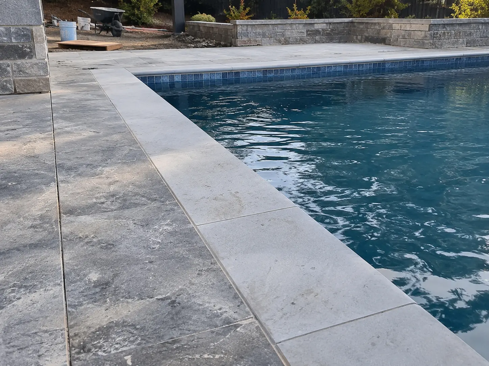

Ellis Services Group · Tiling
Pool Surround Tiling
Bring your poolside area together with new terrace tiles and finished coping edges. We plan the base, drainage and connections to adjoining paving, with materials selected for the way you use your outdoor space.
Enquire about pool surround tiling ↗Back to tiling services →Pool surround tiling, coping edges and drainage
We provide pool surround tiling for the walking surfaces and terraces around a pool. The layout and preparation account for coping edges, adjoining paving, drainage, movement junctions and the connection to the existing pool edge.
Poolside materials need to suit their location and use. We consider the selected tile and its product information with the expected wet conditions, cleaning and exposed edges before agreeing the finish.
We tile poolside terraces, walking areas and coping edges. For the water-retaining surface inside the pool, our pool waterproofing service covers the interior preparation and membrane work.

Pool coping tile movement and surrounding levels
Movement at coping tiles and connections to adjoining paving needs assessment before a replacement finish is agreed. We check the accessible base, edge details and how the selected tile thickness meets existing levels. The scope identifies the removal boundary, protection of the pool and any preparation needed for the terrace. A surround repair does not diagnose water loss from the pool.
Pool surround slip resistance and drainage
Wet walking surfaces need material suitability considered through the selected product information and intended use. Appearance alone does not establish slip resistance. We plan surface drainage, movement junctions and exposed edges together, with cleaning and care requirements explained at handover. For an enquiry about water-retaining surfaces, confirm the separate pool waterproofing scope before assuming it is included.
Porcelain pool surrounds and coping edge installation
We install outdoor porcelain tiles on poolside walking areas and finish the pool edge with coping tiles. The coping caps the pool edge; the surround is the wider walking surface. We coordinate edge profiles, levels and drainage so these two areas connect neatly without treating the junction as an ordinary rigid grout line.
Wet-area grip, heat under bare feet and exposure to pool water matter when choosing the surface. Stone-look porcelain provides a different material and maintenance profile from natural stone. Pool-interior glass mosaic and waterline tiles are separate from the surround work. Share the tile product, coping profile and areas to be replaced so we can quote the relevant preparation and installation.
Assessment, installation and care
- Assess the accessible surface, its condition and the intended finish.
- Confirm preparation, material responsibility, boundaries and access in a written scope.
- Prepare the base and complete the agreed installation or joint renewal, coordinating connected work.
- Explain cleaning, curing and return to use at handover. Timing follows the selected materials and site conditions.
Related services and local enquiries
See Pool interior waterproofing for the connected work and our tile preparation and installation planning guide for supply and sequencing.
Read the tiling FAQs or compare written service quotes. For local access and location details, check our service areas.